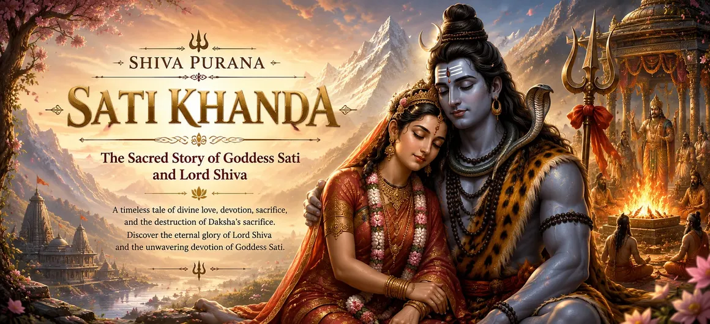

Welcome to Sati Khanda
Sati Khanda is the second sacred division of Rudra Samhita in the seven-Samhita edition of the Shiva Purana. Across forty-three chapters it follows a vast narrative arc: the emergence and influence of Kama, the stories of Sandhya and Arundhati, Daksha's boon, the birth and spiritual resolve of Goddess Sati, her marriage to Lord Shiva, the test of Rama, Daksha's sacrifice, the manifestation of Virabhadra and the final restoration of cosmic order.
At its heart stands the relation of Shiva and Shakti. Sati is not merely a supporting figure in Shiva's story; she is divine power, moral voice and spiritual agency. Her devotion is joined to dignity, her protest confronts contempt disguised as ritual authority, and her departure transforms a family conflict into a cosmic reckoning. Yet the Khanda does not end with devastation: Shiva's compassion reopens the possibility of repentance, responsibility and renewal.
Sati Khanda at a Glance
43 Completed Chapters
৪৩টি সম্পূর্ণ অধ্যায়
The full Sati Khanda journey is available chapter by chapter.
Goddess Sati
দেবী সতী
Her birth, devotion, courage and divine identity shape the entire narrative.
Shiva and Shakti
শিব ও শক্তি
Their union reveals the inseparability of consciousness and sacred power.
Kama and Spring
কাম ও বসন্ত
Desire, beauty and restraint prepare the emotional world of the Khanda.
Daksha Yajna
দক্ষযজ্ঞ
Pride and exclusion turn sacred ritual into a crisis of dharma.
Virabhadra and Justice
বীরভদ্র ও ন্যায়
Divine judgment is followed by Shiva's forgiveness and restoration.
The Six Movements of the Sacred Narrative
Preparation and Divine Birth
প্রস্তুতি ও দিব্য জন্ম
Kama, Sandhya, Arundhati, Durga and Daksha prepare the world into which Sati appears.
Devotion and Marriage
ভক্তি ও বিবাহ
Sati's resolve leads toward the sacred union of Shiva and Shakti.
Test and Estrangement
পরীক্ষা ও দূরত্ব
The Rama episode and Daksha's hostility reveal the cost of failed recognition.
Sati's Protest and Sacrifice
সতীর প্রতিবাদ ও আত্মত্যাগ
Sati confronts dishonor in Daksha's assembly and transforms the course of the sacred narrative.
Virabhadra and Divine Judgment
বীরভদ্র ও দিব্য বিচার
Shiva's grief manifests Virabhadra, who confronts the disorder surrounding Daksha's sacrifice.
Forgiveness and Restoration
ক্ষমা ও পুনঃপ্রতিষ্ঠা
Shiva forgives Daksha, completes the sacrifice and restores ritual and cosmic balance.
Sati: Devotion, Dignity and Divine Agency
Sati's devotion is active rather than passive. She chooses Shiva inwardly, undertakes sacred discipline and remains steadfast when others misunderstand the ascetic Lord. Her love is therefore not portrayed as mere sentiment; it is a form of spiritual knowledge that recognizes greatness beneath an unconventional appearance.
The same devotion also contains self-respect. In Daksha's assembly Sati does not quietly accept contempt directed toward Shiva and the sacred bond she embodies. She speaks, names the wrong and refuses to let social status redefine spiritual truth. The narrative makes her voice essential to its moral force.
From Desire to Sacred Union
The early chapters may appear to delay Sati's central story, but they establish its spiritual vocabulary. Kama represents desire and attraction; Vasanta or spring gives desire an atmosphere; Sandhya and Arundhati introduce restraint, transformation and fidelity. These strands prepare the reader to distinguish fleeting impulse from devotion disciplined by purpose.
When Shiva and Sati unite, the Khanda does not simply celebrate a wedding. It brings the ascetic and household dimensions of sacred life into relation. Shiva remains the free Lord; Sati remains Shakti. Their intimacy expresses a unity that does not erase distinct voice, responsibility or spiritual power.
Chapters of Sati Khanda → Part 1
Explore the sacred beginnings of Sati Khanda. These chapters narrate the divine life of Goddess Sati, the appearance of Kama, the story of Sandhya and the events leading to Sati's birth.
Chapters of Sati Khanda → Part 2
These chapters describe the birth of Goddess Sati, her devotion to Lord Shiva, her severe penance and the divine marriage that united Shiva and Shakti.
Chapters of Sati Khanda → Part 3
These chapters narrate the events leading to Daksha's sacrifice, the insult to Lord Shiva, Sati's protest and casting off of her mortal body, and the manifestation of mighty Virabhadra.
Chapters of Sati Khanda → Part 4
The final chapters describe the destruction of Daksha's sacrifice, the glory of Lord Shiva, the removal of Daksha's suffering and the restoration of cosmic and ritual order.
More Sacred Teachings
Continue exploring the sacred wisdom, philosophy and devotional teachings of the Shiva Purana.
📖 Explore TeachingsShiva Purana FAQ
Find clear answers to frequently asked questions about the Shiva Purana, its Samhitas, Khandas and teachings.
❓ View FAQDaksha Yajna: When Ritual Loses Reverence
Daksha's sacrifice is outwardly grand but inwardly fractured. The exclusion of Shiva is not a minor breach of etiquette; it reveals ritual severed from humility and sacred recognition. The Khanda warns that precision, rank and public display cannot make an offering holy when contempt governs the heart.
The disaster grows because correction is repeatedly resisted. Sati's presence offers Daksha an opportunity to reconsider, yet pride hardens into public insult. Divine judgment therefore appears not as arbitrary anger but as the consequence of a sacred order deliberately emptied of truth.
Understanding Sati's Casting Off of Her Body
Within the sacred narrative, Sati's casting off of her mortal body marks a theological rupture: divine Shakti refuses identification with a body received through Daksha after he has rejected the truth she embodies. The event expresses grief, dignity, protest and cosmic transformation in mythic form.
This episode belongs to sacred literature and should never be treated as permission, praise or instruction for self-harm. Its spiritual value lies in the moral and theological questions it raises, not in imitation of the act. Human suffering deserves compassion, support and protection of life.
Virabhadra: Divine Judgment and Its Limit
Virabhadra emerges from Shiva's grief and command as concentrated power directed against a corrupted sacrifice. His march, the omens and the confrontation with the assembled gods dramatize a truth already present in Sati's protest: sacred authority becomes answerable when it protects pride instead of dharma.
Yet Virabhadra is not the final word. Judgment clears the obstruction, but only Shiva's presence can complete the movement toward restoration. Power exposes wrongdoing; compassion determines what comes after it.
Shiva's Compassion and the Restoration of Daksha
The conclusion prevents Sati Khanda from becoming a story of revenge. The gods journey to Kailasa, praise Shiva and seek his grace. Shiva removes Daksha's misery and allows the interrupted sacrifice to reach completion. Restoration does not deny the wrong or erase its consequences; it shows that divine justice seeks the re-establishment of dharma rather than endless destruction.
This final movement reveals the breadth of Mahadeva: the ascetic who cannot be controlled by social pride, the grieving Lord whose power shakes the cosmos, and the compassionate restorer who accepts repentance and renews sacred order.
How to Read Sati Khanda
Follow the Sequence
ধারাবাহিকতা অনুসরণ করুন
The early stories prepare ideas that return in Sati's central narrative.
Notice Desire and Discipline
কামনা ও সংযম লক্ষ্য করুন
Compare Kama's influence with devotion shaped by spiritual purpose.
Listen to Sati's Voice
সতীর কণ্ঠ শুনুন
Her choices and speech carry the moral center of the Khanda.
Question Empty Ritual
অন্তঃসারশূন্য আচার ভাবুন
Ask how reverence, humility and inclusion make sacred action meaningful.
Hold Justice and Mercy Together
ন্যায় ও করুণা একত্রে দেখুন
Virabhadra's judgment and Shiva's restoration belong to one complete arc.
Continue to Parvati Khanda
পার্বতী খণ্ডে অগ্রসর হোন
Sati's story prepares the rebirth and renewed tapas of divine Shakti.
Spiritual Reflections from Sati Khanda
Steadfast Devotion
অটল ভক্তি
Sati recognizes Shiva beyond appearance and public opinion.
Spiritual Dignity
আধ্যাত্মিক মর্যাদা
Devotion need not surrender truth, voice or self-respect.
Recognition of the Divine
দিব্য সত্তাকে চেনা
The Rama episode asks whether the sacred can be recognized in unexpected form.
Discernment in Ritual
আচারে বিবেক
Sacred action requires humility and right intention, not display alone.
Justice with Purpose
উদ্দেশ্যপূর্ণ ন্যায়
Judgment removes disorder so that dharma may be restored.
Compassionate Renewal
করুণাময় নবায়ন
Shiva's final forgiveness keeps transformation possible after failure.
“Where pride empties ritual of reverence, devotion speaks with courage; where judgment removes disorder, Shiva's compassion opens the path to restoration.”
Frequently Asked Questions
What is Sati Khanda?
Sati Khanda is the second Khanda of Rudra Samhita in the Shiva Purana edition followed here. It narrates the sacred life of Goddess Sati, her union with Shiva, Daksha Yajna, Virabhadra and the restoration of order.
How many chapters are in Sati Khanda?
It contains 43 chapters, and every chapter in this directory is marked completed.
What does Shiva and Sati's marriage symbolize?
It expresses the inseparability of Shiva and Shakti—consciousness and divine power—while celebrating devotion, spiritual choice and sacred companionship.
What is the lesson of Daksha Yajna?
The narrative warns that pride, exclusion and contempt can hollow out sacred ritual. True worship requires humility, right intention and recognition of the Divine.
Who is Virabhadra?
Virabhadra is the mighty being manifested by Shiva after Sati casts off her body. He carries out divine judgment at Daksha's sacrifice before Shiva restores balance.
Does Sati Khanda endorse self-harm?
No. Sati's casting off of her body belongs to a theological and mythic narrative. It should not be imitated or understood as approval of self-harm; human life and suffering deserve protection, compassion and support.
Begin Your Journey Through Sati Khanda
Continue from Srishti Khanda into the sacred life of Goddess Sati. Follow the complete forty-three-chapter journey from divine preparation and marriage through Daksha Yajna, Virabhadra, forgiveness and restoration.